Spatial patterns’ clustering
Jakub Nowosad
2020-06-23
Source:vignettes/articles/v5_cluster.Rmd
v5_cluster.RmdThe pattern-based spatial analysis makes it possible to find clusters of areas with similar spatial patterns. This vignette shows how to do spatial patterns’ clustering on example datasets. Let’s start by attaching neccesary packages:
library(motif) library(stars) #> Loading required package: abind #> Loading required package: sf #> Linking to GEOS 3.8.1, GDAL 2.4.4, PROJ 7.0.1 library(sf) safe_pal6 = c("#88CCEE", "#CC6677", "#DDCC77", "#117733", "#332288", "#888888") safe_pal4 = c("#88CCEE", "#CC6677", "#DDCC77", "#117733")
Spatial patterns’ clustering requires one spatial object. For this vignette, we will read the "raster/landcover2015.tif" file.
landcover = read_stars(system.file("raster/landcover2015.tif", package = "motif"))
This file contains a land cover data for New Guinea, with seven possible categories: (1) agriculture, (2) forest, (3) grassland, (5) settlement, (6) shrubland, (7) sparse vegetation, and (9) water.
landcover = droplevels(landcover) plot(landcover, key.pos = 4, key.width = lcm(5), main = NULL)

Regular local landscapes
In the first example, we divide the whole area into many regular local landscapes, and find a way to cluster them based on their patterns.
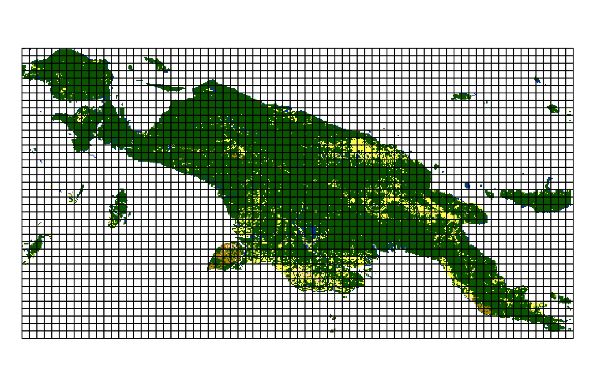
It starts with calculating a signature for each local landscape using the lsp_signature() function. Here, we use the co-occurrence vector (type = "cove") representation on local landscapes of 100 by 100 cells (window = 100). Distance measures, used in one of the next steps, often require normalization of the vector, therefore we transform the representation to sum to one.
landcover_cove = lsp_signature(landcover, type = "cove", window = 100, normalization = "pdf")
Read the Introduction to the motif package vignette to learn more about spatial signatures.
Next, we need to calculate the distance (dissimilairy) between each local landscape’s pattern. This can be done with the lsp_to_dist() function, where we must provide the output of lsp_signature() and a distance/dissimilarity measure used (dist_fun = "jensen-shannon").
landcover_dist = lsp_to_dist(landcover_cove, dist_fun = "jensen-shannon") #> Metric: 'jensen-shannon' using unit: 'log2'; comparing: 1084 vectors.
The output, landcover_dist, is of a dist class.
class(landcover_dist) #> [1] "dist"
This allows it to be used by many existing R functions for clustering, which expect a distance matrix (dist) as an input. It includes different approaches of hierarchical clustering (hclust(), cluster::agnes(), cluster::diana()) or fuzzy clustering (funny()). More information about clustering techniques in R can be found in CRAN Task View: Cluster Analysis & Finite Mixture Models.
We use a hierarchical clustering using hclust() in this example. It needs a distance matrix as the first argument and a linkage method as the second one. Here, we use method = "ward.D2", which means that we are be using Ward’s minimum variance method that minimizes the total within-cluster variance.
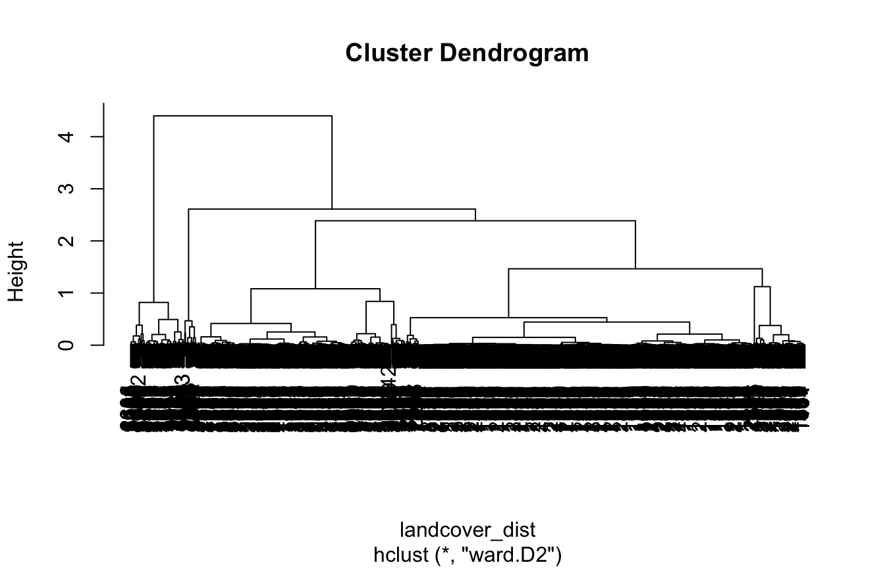
Graphical representation of the hierarchical clustering is called a dendrogram. Based on the obtained dendrogram, we can divide our local landscapes into a specified number of groups using cutree(). In this example, we use six classes (k = 6) to make a result fairly straightforward to understand.
clusters = cutree(landcover_hclust, k = 6)
The motif package allows representing the clustering results as either sf or stars object. This can be done with the lsp_add_clusters() function.
sf
By the default, it creates a sf object with a new variable clust:
landcover_grid_sf = lsp_add_clusters(landcover_cove, clusters) plot(landcover_grid_sf["clust"], pal = safe_pal6)
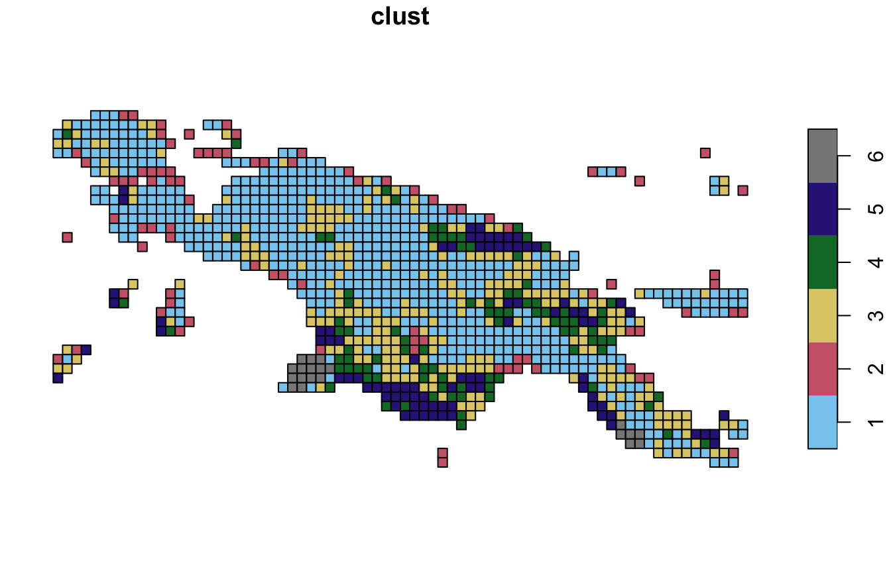
Samples
Now, it is possible see some examples of each cluster.
For example, we can get id values of randomly selected local landscapes from the first cluster.
landcover_grid_sf_1 = subset(landcover_grid_sf, clust == 1) sample(landcover_grid_sf_1$id, 3) #> [1] 1135 1060 1366
Next, we can extract them using lsp_extract(). This cluster contains landscapes mostly covered by forest with small areas of agriculture.
plot(lsp_extract(landcover, window = 100, id = 1229), key.pos = NULL)
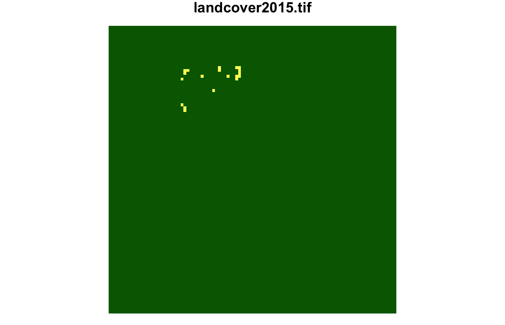
plot(lsp_extract(landcover, window = 100, id = 1237), key.pos = NULL)
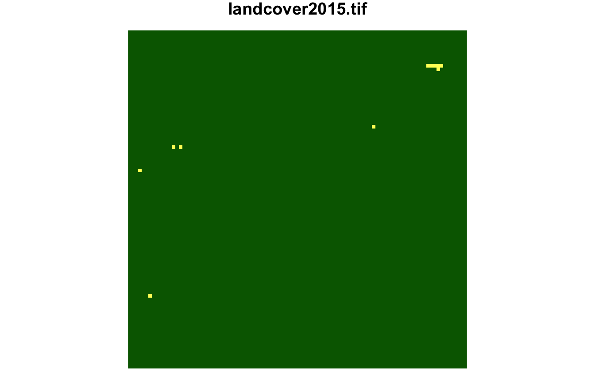
plot(lsp_extract(landcover, window = 100, id = 687), key.pos = NULL)
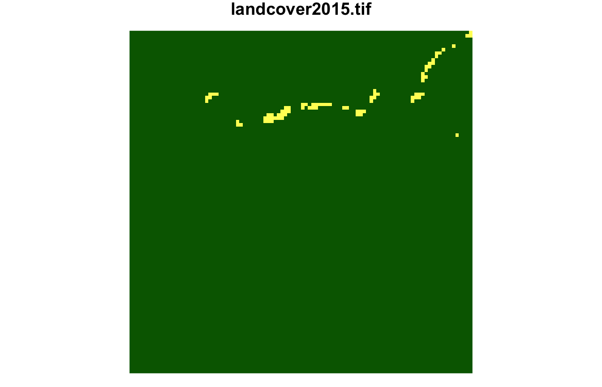
This approach can be used for any other cluster.
landcover_grid_sf_6 = subset(landcover_grid_sf, clust == 6) sample(landcover_grid_sf_6$id, 3) #> [1] 2780 2854 2706
The sixth cluster is covered by frest, grassland, with smaller areas of water and sparse vegetation.
plot(lsp_extract(landcover, window = 100, id = 2098), key.pos = NULL)
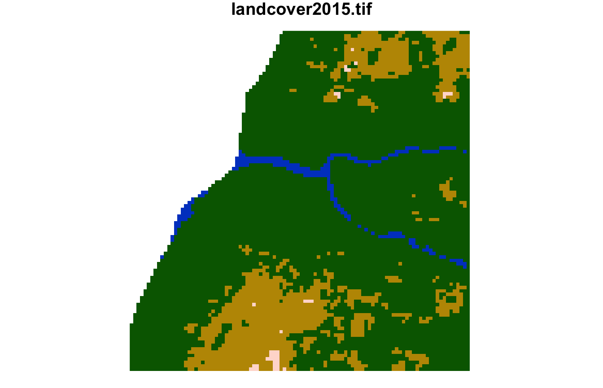
plot(lsp_extract(landcover, window = 100, id = 2173), key.pos = NULL)
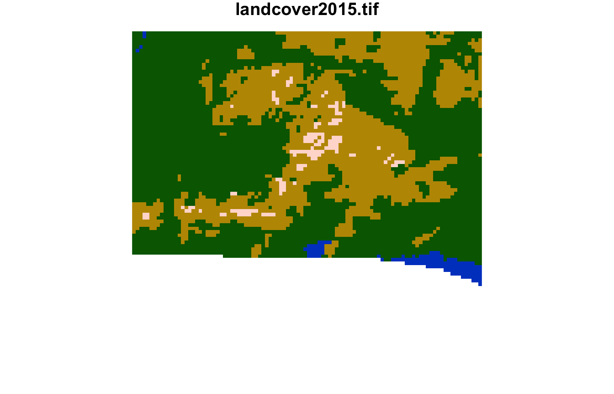
plot(lsp_extract(landcover, window = 100, id = 2172), key.pos = NULL)
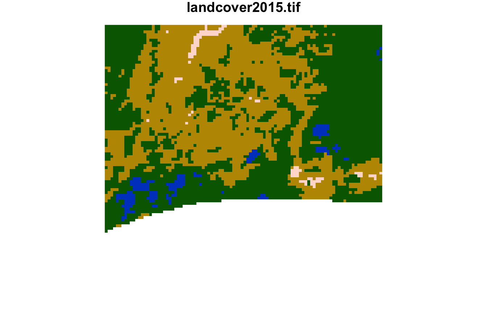
Quality
We can also calculate the quality of the clusterings with the lsp_add_quality() function, which requires an output of lsp_add_clusters() as the first argument and output of lsp_to_dist() as the second one. It adds three new variables: inhomogeneity, isolation, and quality.
landcover_grid_sfq = lsp_add_quality(landcover_grid_sf, landcover_dist)
Inhomogeneity (inhomogeneity) measures a degree of mutual dissimilarity between all objects in a cluster. This value is between 0 and 1, where the small value indicates that all objects in the cluster represent consistent patterns so the cluster is pattern-homogeneous.
inhomogeneity_pal = hcl.colors(6, palette = "Emrld") plot(landcover_grid_sfq["inhomogeneity"], pal = inhomogeneity_pal)
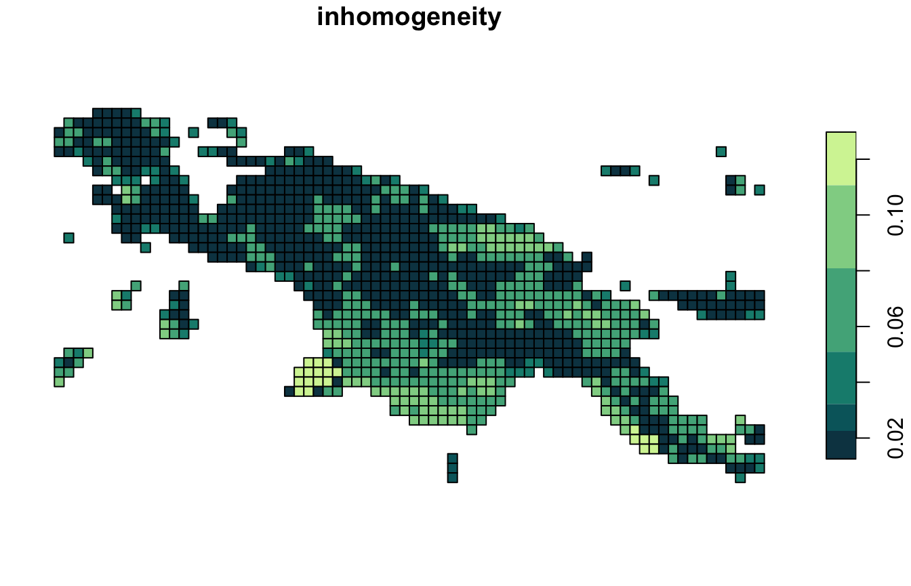
Isolation (isolation) is an average distance between the focus cluster and all of its neighbors. This value is between 0 and 1, where the large value indicates that the cluster stands out from its surroundings.
isolation_pal = hcl.colors(5, palette = "Teal", rev = TRUE) plot(landcover_grid_sfq["isolation"], pal = isolation_pal)
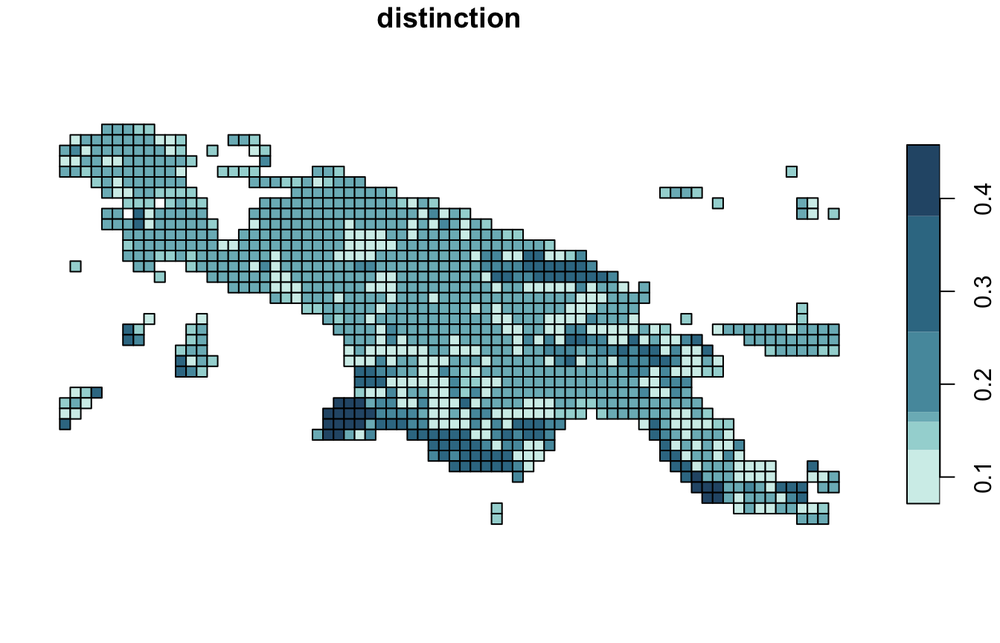
Overall quality (quality) is calculated as 1 - (inhomogeneity / isolation). This value is also between 0 and 1, where increased values indicate increased quality of clustering.
quality_pal = hcl.colors(5, palette = "Temps", rev = TRUE) plot(landcover_grid_sfq["quality"], pal = quality_pal)
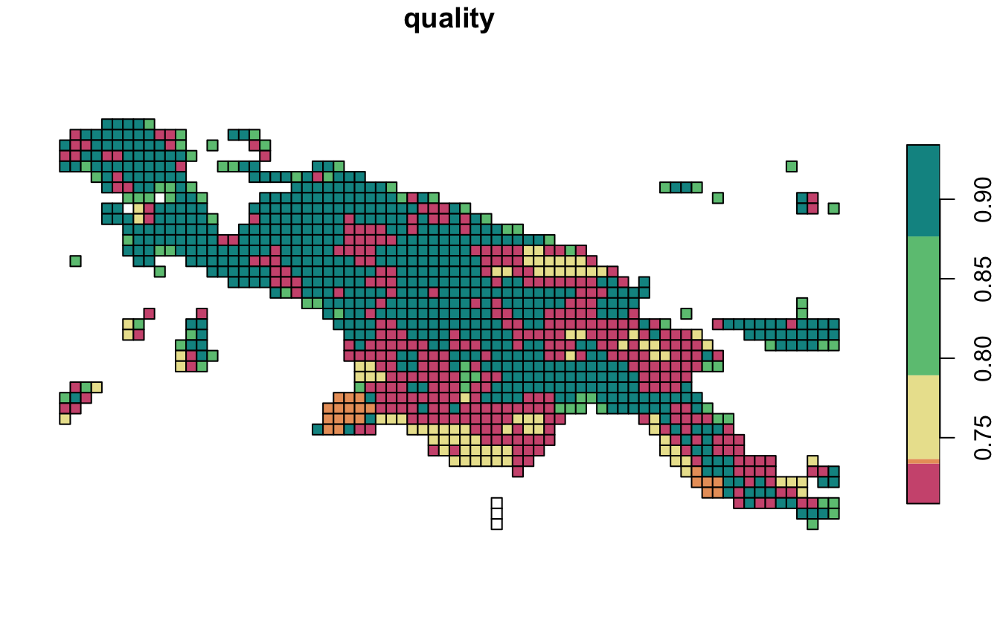
stars
To create an stars object with a new attribute clust, we must set output = "stars".
landcover_grid_stars = lsp_add_clusters(landcover_cove, clusters, output = "stars") #> Warning: Column signature is of a list class and will be dropped from the output #> object. plot(landcover_grid_stars["clust"], col = safe_pal6)
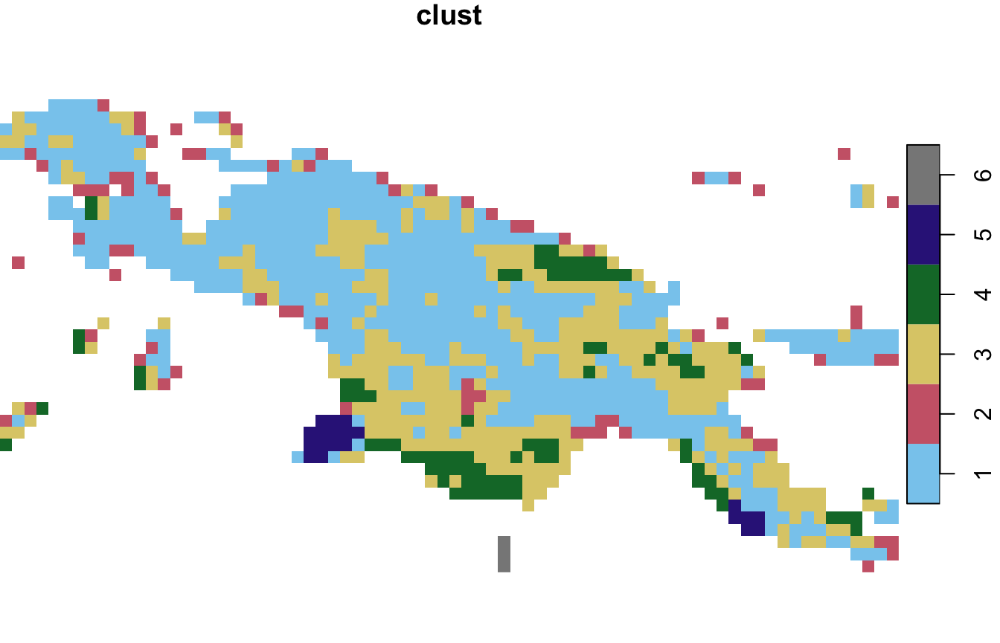
However, it is not yet possible to calculate the quality of the clusterings for the stars objects:
landcover_grid_starsq = lsp_add_quality(landcover_grid_stars, landcover_dist) #> Error: This function requires an sf object as the x argument.
Irregular local landscapes
The motif package also allows for the clustering of irregular regions based on the user-provided polygons. It has an example spatial vector dataset, ecoregions.gpkg, which contains terrestrial ecoregions for New Guinea from https://ecoregions2017.appspot.com/.
ecoregions = read_sf(system.file("vector/ecoregions.gpkg", package = "motif"))
This dataset has 22 rows, where each row relates to one ecoregion. Each ecoregion is also related to a unique value in the id column.

The first step here is to calculate a signature for each ecoregion using lsp_signature():
landcover_cove2 = lsp_signature(landcover, type = "cove", window = ecoregions["id"], normalization = "pdf")
Next step involves calculating distances between signatures of ecoregions:
landcover_dist2 = lsp_to_dist(landcover_cove2, dist_fun = "jensen-shannon") #> Metric: 'jensen-shannon' using unit: 'log2'; comparing: 22 vectors.
Again, we find clusters using a hierarchical clustering:

This time, we divide the data into four clusters:
clusters2 = cutree(landcover_hclust2, k = 4)
sf
Next steps are to add clusters ids to the sf object:
landcover_grid_sf2 = lsp_add_clusters(landcover_cove2, clusters2, window = ecoregions["id"])
The results show that most area of New Guinea belongs to the second clusters, with only one ecoregion of cluster 3 (small islands south from New Guinea) and cluster 4.
plot(landcover_grid_sf2["clust"], pal = safe_pal4)

Samples
The first cluser, for example, consists of nine ecoregions, from which we sampled only three.
landcover_grid_sf2_1 = subset(landcover_grid_sf2, clust == 1) sample(landcover_grid_sf2_1$id, 3) #> [1] 10 1 22
Next, we can extract their land cover using lsp_extract(). This cluster contains landscapes mostly covered by forest with small areas of agriculture.
plot(lsp_extract(landcover, window = ecoregions["id"], id = 10), key.pos = NULL)
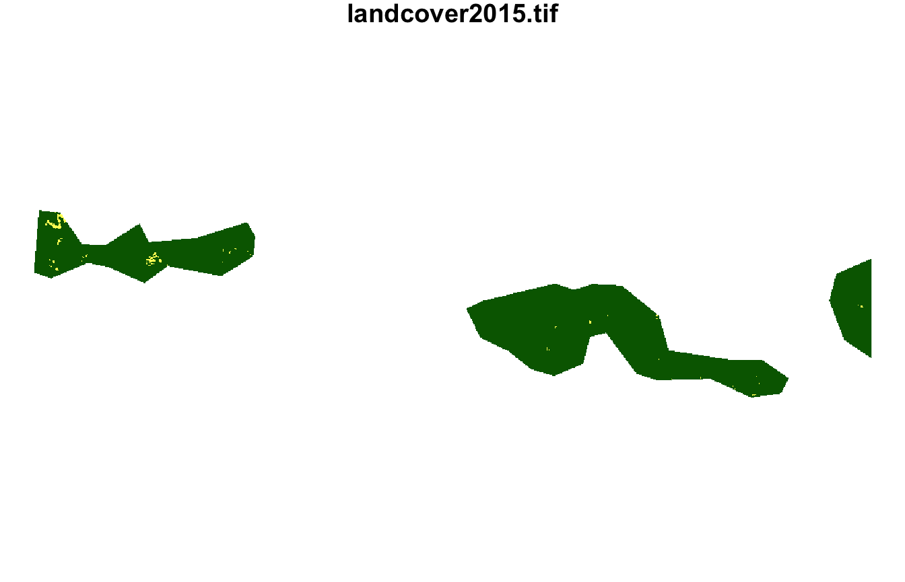
plot(lsp_extract(landcover, window = ecoregions["id"], id = 1), key.pos = NULL)
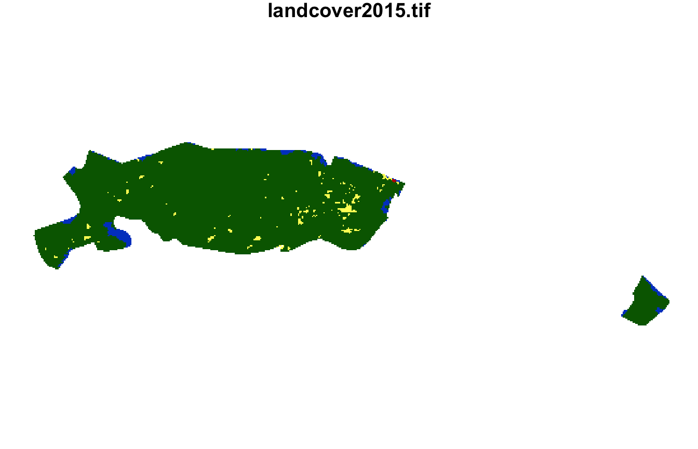
plot(lsp_extract(landcover, window = ecoregions["id"], id = 22), key.pos = NULL)

Quality
Final step involves calculating the quality metrics of the obtained clusters:
landcover_grid_sfq2 = lsp_add_quality(landcover_grid_sf2, landcover_dist2)

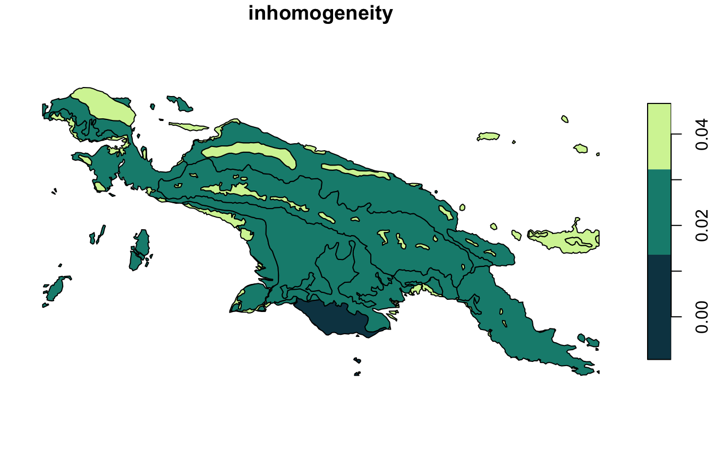
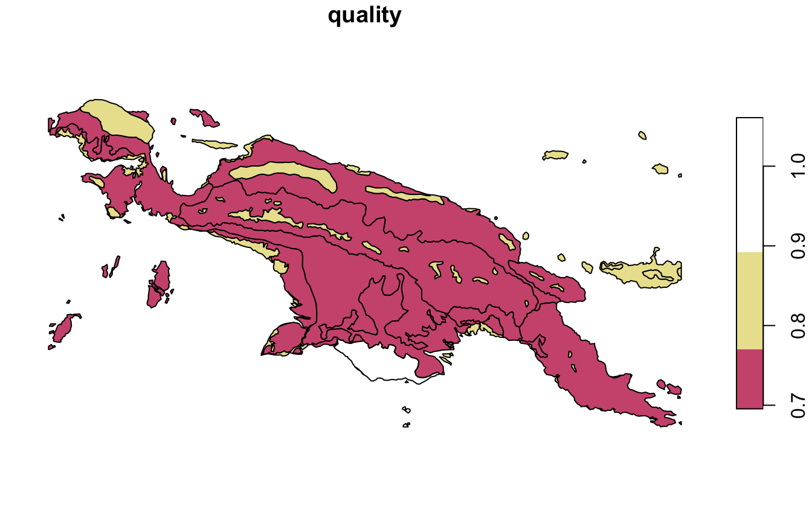
stars
To create a stars object with a new attribute clust, we should set output = "stars". However, it is not yet possible to calculate the quality of the clusterings for the stars objects.
landcover_grid_stars2 = lsp_add_clusters(landcover_cove2, clusters2, window = ecoregions["id"], output = "stars") #> Warning: Column signature is of a list class and will be dropped from the output #> object. plot(landcover_grid_stars2["clust"], col = safe_pal4)
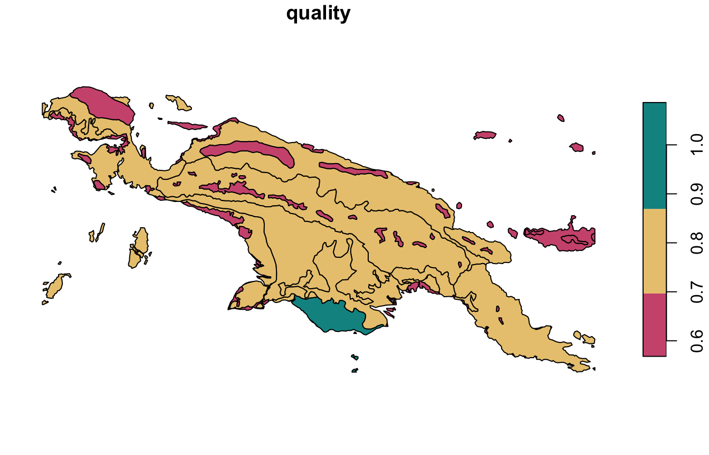